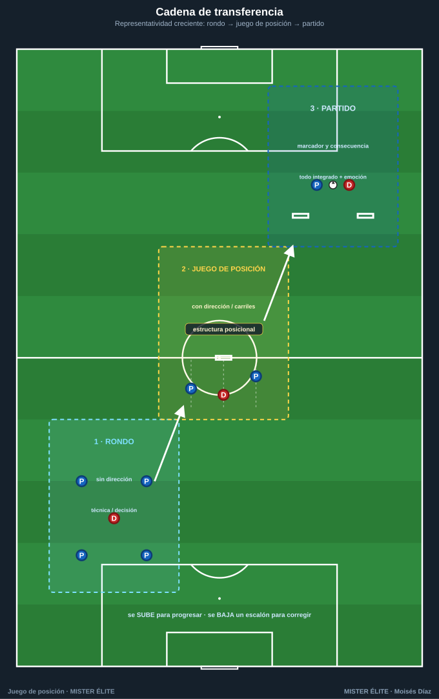
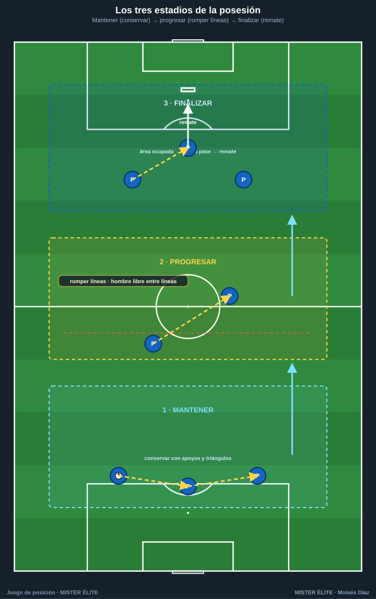
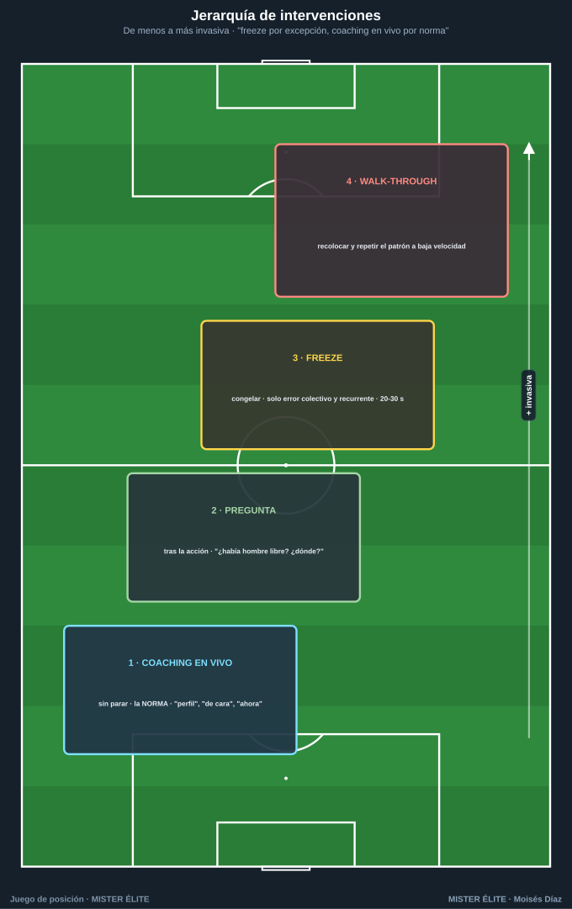

Módulo 03 · Del rondo al juego de posición (y al partido)
La cadena de transferencia · cómo progresar y dar dirección a una posesión · cómo coachear el juego de posición.
1. La cadena de transferencia: rondo → juego de posición → partido
El error metodológico más común es tratar el rondo como un calentamiento lúdico aislado del partido. En realidad rondo, juego de posición y partido son tres escalones de la misma escalera de transferencia: cada uno conserva el problema táctico anterior y le añade una capa de realidad competitiva.

RONDO JUEGO DE POSICIÓN PARTIDO (reducido / 11)
sin dirección → con dirección/porterías → con marcador y consecuencia
técnica/decisión estructura posicional todo integrado + emoción
La regla que ordena la cadena es la representatividad (cuánto se parece la práctica a la competición). Se incrementa por capas, no de golpe.
Escalón 1 — Rondo. Posesión en superioridad clara (4v1, 5v2…) y sin dirección. Entrena con máxima densidad: velocidad técnica bajo presión real, perfil y "mirar antes de recibir", lectura del 1.er defensor y del libre inmediato, tercer hombre elemental. Su límite: no entrena dirección, orientación al espacio ni finalización. Solo rondos = "tocar bonito" sin progresar.
Escalón 2 — Juego de posición. Coge el problema del rondo y le añade lo que le falta: dirección y orientación al espacio, mediante (1) porterías/zonas de progresión, (2) división en carriles y líneas (ocupación racional), (3) comodines posicionados que reproducen estructura de equipo. Aporta orientación hacia un objetivo, superioridad posicional, cambios de orientación y reconocimiento de líneas que romper. Es el escalón bisagra.
Escalón 3 — Partido. Dos equipos, dos porterías, marcador y consecuencia. Aporta oposición plena y bidireccional (transiciones reales, contrapresión en su contexto), finalización con portero y carga emocional. Su límite: como todo ocurre a la vez, es difícil aislar un detalle fino → se vuelve al rondo/JdP para pulir.
| Variable | Rondo | Juego de posición | Partido |
|---|---|---|---|
| Dirección | No | Sí (a zona/portería) | Sí (marcar) |
| Orientación al espacio | Mínima | Alta (carriles/líneas) | Total |
| Superioridad | Numérica | Numérica + posicional | La que se genere |
| Finalización | No | Opcional (mini-meta) | Sí (portero) |
| Transición/contrapresión | No | Parcial | Real |
| Repeticiones técnicas/min | Muy alta | Media-alta | Baja |
| Representatividad | Baja | Media | Alta |
Idea-fuerza: el rondo enseña a tocar, el juego de posición enseña a tocar en una dirección y con estructura, el partido enseña a hacerlo cuando importa. Se progresa subiendo escalones; se corrige bajando uno.
2. Cómo progresar y dar dirección a una posesión

MANTENER → PROGRESAR → FINALIZAR
(conservar) (romper líneas) (terminar en remate)
El defecto frecuente es atascarse en "mantener". Progresar y finalizar no surgen solos: se provocan modificando la tarea. Palancas, de menor a mayor exigencia:
a) Añadir DIRECCIÓN. Porterías/mini-porterías de progresión (de "conservar" a "introducir el balón en una zona"); líneas de progresión (3 franjas; punto al pasar de zona 1 a 3 controlado); de zona a zona con condición (el balón pasa solo si lo recibe un jugador de cara o entre líneas).
b) Añadir ZONAS y CARRILES. 5 carriles + 3 alturas con la regla de ocupación; zona prohibida / de pase obligado (p. ej. no progresar por el centro sin haber jugado por fuera); zona de "hombre libre entre líneas" que vale doble.
c) Usar COMODINES para dirigir. Comodín de progresión (en la zona objetivo); comodín-pivote (entre líneas, fuerza buscar el interior); comodines de banda (amplitud, atraer-cambiar); quitarlos progresivamente (+3 → +2 → +1) sube la exigencia.
d) REGLAS que fuerzan progresar/finalizar. Límite de toques por zona; nº mínimo de pases antes de progresar/finalizar; premio por acción de valor (gol doble tras pase entre líneas o cambio de orientación); límite de tiempo para finalizar.
Regla de oro de diseño: cambia una sola variable cada vez para saber qué provocó la mejora.
3. Cómo coachear el juego de posición
El juego de posición no se "deja correr": se coachea. Pero sobre-coachear lo mata (mata el ritmo y la decisión). El arte es saber qué corregir, cuándo intervenir y cómo gestionar la intensidad.
a) Qué corregir (por prioridad de impacto)
- Perfil / orientación corporal antes de recibir. El fallo nº 1. "Abre el cuerpo, recíbela de lado, mira tu portería objetivo".
- Mirar antes de recibir (escaneo). "¿Qué viste antes de recibir?"
- Primer toque orientado. Que el control ya vaya hacia donde se progresa.
- Peso y dirección del pase. Fuerte y al pie correcto (al perfil de progresión, no "al jugador").
- Ocupar/abandonar carriles. "No 2 en el mismo carril; si él baja, tú subes".
- Apoyos y orientación del juego: línea de cara + línea de seguridad.
- Ritmo (pausa-aceleración): cuándo circular para atraer y cuándo acelerar para romper.
b) Cuándo intervenir (jerarquía de intervenciones)

De menos a más invasiva (usar siempre la mínima necesaria):
- Coaching en vivo (sin parar): la mayoría del tiempo. Indicaciones cortas y posicionales ("perfil", "de cara", "cambia", "ahora").
- Pregunta tras la acción: aprovechar una pausa para preguntar ("¿había hombre libre? ¿dónde?"). Desarrolla la decisión.
- FREEZE (congelar la imagen): parar en el momento exacto del error/acierto recurrente, todos quietos. Solo cuando el error es colectivo, recurrente y posicional. Congelar → señalar la mejor opción (idealmente que la vea el jugador) → rebobinar y repetir bien → soltar. 20-30 s máx.
- Parada + repetición guiada (walk-through): si el fallo es generalizado, recolocar y reproducir el patrón a baja velocidad.
Regla: freeze por excepción, coaching en vivo por norma.
c) Gestión del ritmo y la intensidad
El juego de posición debe entrenarse a intensidad de competición: si los defensores (rojos) presionan flojo, no hay presión real y la técnica no transfiere. Exigir presión auténtica; series cortas de alta intensidad con descanso suficiente; penalizar la pasividad (el que pierde, pisa a recuperar → entrena la contrapresión); subir/bajar la dificultad para mantener la dificultad óptima (ni trivial ni imposible); intervenciones cortas para no enfriar el ritmo.
Ideas clave
- Rondo, juego de posición y partido son tres escalones de la misma escalera: se sube para progresar, se baja para corregir.
- El juego de posición es el escalón bisagra: añade al rondo dirección, estructura y superioridad posicional.
- Para progresar, provoca con dirección, zonas/carriles, comodines y reglas — una variable cada vez.
- Coachea en vivo por norma, freeze por excepción; corrige primero perfil y escaneo (lo que más rinde).
- Sin intensidad de competición real, la tarea no transfiere nada al domingo.
Errores comunes
- Tratar el rondo como calentamiento aislado: se pierde la transferencia; el equipo toca pero no progresa.
- Saltar del rondo al partido sin el escalón intermedio: el salto es demasiado grande.
- Cambiar varias variables a la vez: no se sabe qué provocó la mejora (o el empeoramiento).
- Sobre-coachear / abusar del freeze: se mata el ritmo que precisamente se quiere entrenar.
- Permitir presión floja de los defensores: sin estrés real, la técnica no se transfiere.
MISTER ÉLITE — Moisés Díaz